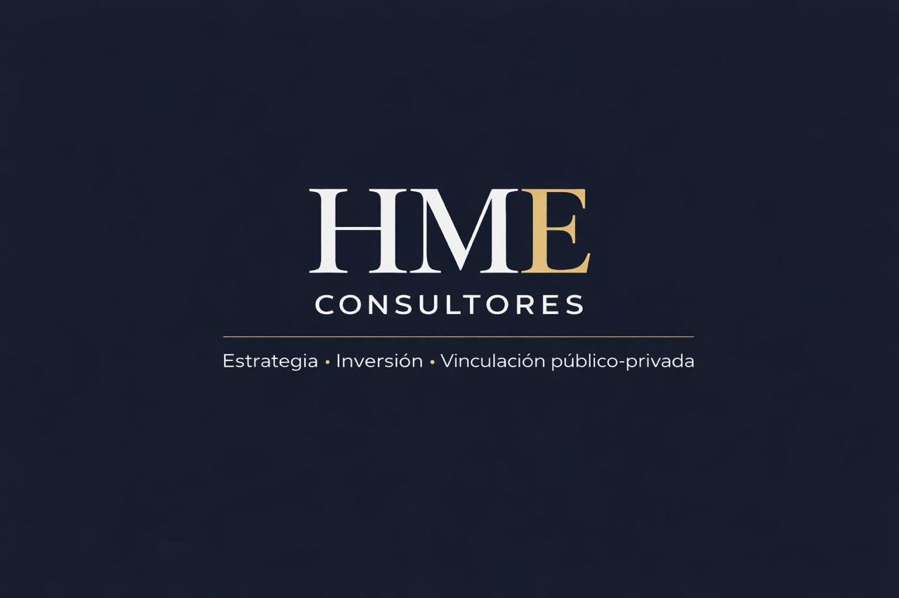

Especialistas en el desarrollo de Estrategia Corporativa, Estructuras de Inversión y Vinculación Público-Privada de alto nivel.
Solicitar una ConsultaHME Consultores es una firma especializada en estrategia, estructuración de inversión y vinculación entre la iniciativa privada y el sector público.
Acompañamos a empresas, inversionistas y organizaciones en la identificación, desarrollo y ejecución de proyectos estratégicos, facilitando la interacción institucional necesaria para convertir oportunidades en proyectos viables y sostenibles.
Nuestra experiencia combina visión empresarial, entendimiento institucional y desarrollo de negocios, permitiendo estructurar initiatives que generen valor económico y desarrollo regional.
Diseño de estrategias de crecimiento, estructuración de proyectos y análisis de oportunidades de inversión.
Integración de inversionistas, diseño de esquemas de coinversión y estructuración de modelos financieros para proyectos estratégicos.
Interlocución institucional y facilitación de acuerdos entre empresas, inversionistas y entidades gubernamentales.
Ejecutivo mexicano con amplia experiencia en desarrollo de negocios, estrategia comercial, dirección empresarial y generación de alianzas estratégicas. A lo largo de su trayectoria ha participado en la estructuración, promoción y desarrollo de proyectos de inversión, turismo, energía, infraestructura y servicios, destacando por su capacidad para identificar oportunidades de crecimiento y construir relaciones de largo plazo con actores del sector público y privado. Su perfil combina visión estratégica, liderazgo comercial y una sólida capacidad de negociación, orientada a la creación de valor y al desarrollo de proyectos de alto impacto económico y social. Ha ocupado posiciones directivas y de representación empresarial, impulsando iniciativas enfocadas en el crecimiento sostenible, la atracción de inversiones y la consolidación de modelos de negocio innovadores. Reconocido por su enfoque orientado a resultados, Miguel Flores Alonso promueve la colaboración, la generación de consensos y la construcción de relaciones de confianza como elementos fundamentales para el éxito de los proyectos y organizaciones que lidera. Áreas de especialidad: desarrollo de negocios, estrategia comercial, dirección general, negociación, alianzas estratégicas, inversión, turismo, energía e infraestructura.
Empresario y líder del sector privado con una destacada trayectoria en el fortalecimiento del desarrollo económico y la competitividad empresarial en Yucatán. Es reconocido por su capacidad para impulsar la colaboración entre la iniciativa privada, la academia y el sector público, promoviendo proyectos orientados al crecimiento sostenible, la innovación y la generación de oportunidades para la región. Se desempeñó como Presidente del Consejo Coordinador Empresarial de Yucatán durante el periodo 2023–2024, etapa en la que impulsó iniciativas relacionadas con la seguridad, la atracción de inversiones, el desarrollo energético, la capacitación del talento y la competitividad empresarial. Cuenta con experiencia profesional en EY (Ernst & Young), donde participó en proyectos de asesoría fiscal corporativa y transacciones inmobiliarias, fortaleciendo su visión estratégica y conocimiento del entorno empresarial. Su liderazgo se distingue por un enfoque colaborativo, orientado a resultados y comprometido con la construcción de un entorno favorable para la inversión, la innovación y el desarrollo sustentable. A lo largo de su trayectoria ha promovido el diálogo y la coordinación entre los diferentes actores económicos para contribuir al crecimiento y la prosperidad de Yucatán. Áreas de experiencia: liderazgo empresarial, desarrollo económico regional, vinculación público-privada, competitividad, atracción de inversiones, sostenibilidad y fortalecimiento institucional. Esta versión funciona muy bien para una ficha de presentación de entre 120 y 150 palabras. Si la necesitas para un consejo de administración o para presentar a Henry ante inversionistas, puedo hacer una versión más prestigiosa y de mayor impacto ejecutivo.
Economista y servidor público con amplia trayectoria en la promoción del desarrollo económico, la atracción de inversiones y la generación de empleo en Yucatán. Se desempeñó como titular de la Secretaría de Fomento Económico y Trabajo del Estado de Yucatán durante la administración estatal 2018–2024, encabezando la estrategia de crecimiento económico y fortalecimiento industrial de la entidad. Durante su gestión impulsó la llegada de inversiones nacionales e internacionales, promovió el desarrollo de infraestructura económica, la expansión industrial, la formación de talento especializado y el fortalecimiento de sectores estratégicos como manufactura avanzada, tecnologías de la información, logística, energía y economía del conocimiento. Ha sido un promotor de la vinculación entre gobierno, iniciativa privada y academia, impulsando políticas orientadas a mejorar la competitividad regional, atraer capital productivo y consolidar a Yucatán como uno de los destinos más atractivos para la inversión en México. Áreas de experiencia: desarrollo económico, atracción de inversiones, política industrial, competitividad regional, generación de empleo, infraestructura económica y vinculación público-privada.